1.Welcome Page
Pagina de logare/creare cont ofera urmatoarele functionalitati:
-
-Apasa Log in pentru a intra in contul tau:
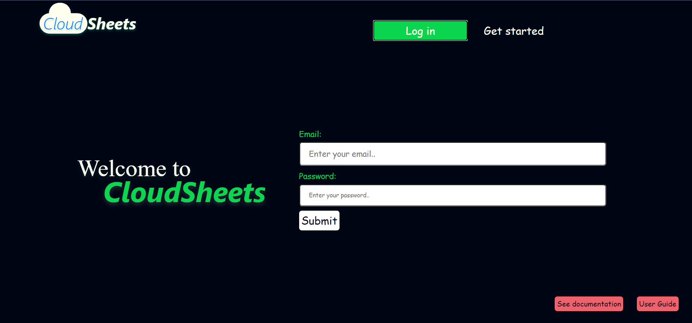
-
-Apasa Get started pentru a crea un cont nou:
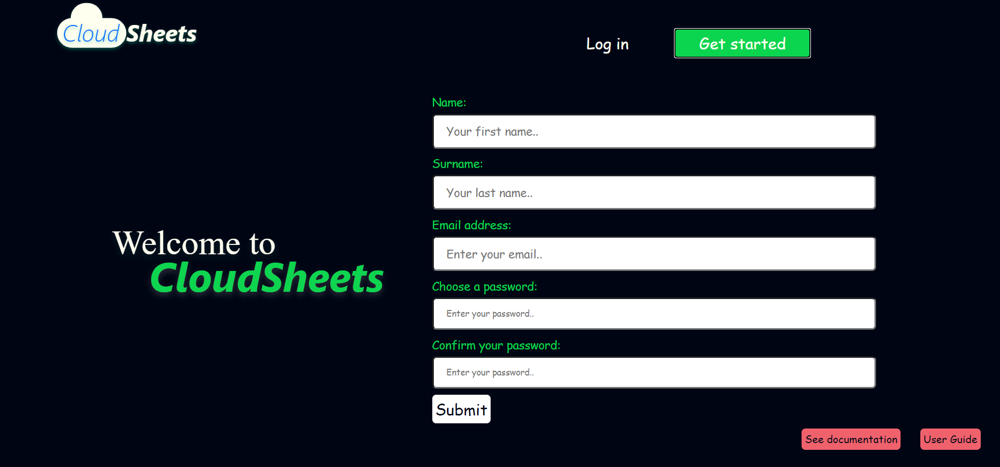
-
-Acces documentatie si ghid utilizator
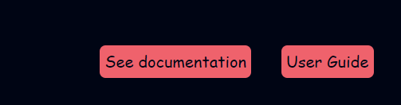
2.Main page
Pagina principala ofera urmatoarele functionalitati:
-
-Logheaza-te in conturile tale, apasand urmatoarele butoane:
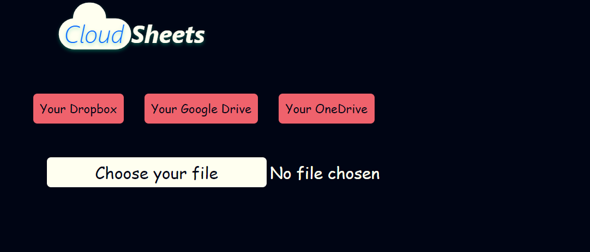
-
-Odata ce te-ai logat, poti alege un fisier local pe butonul choose file:
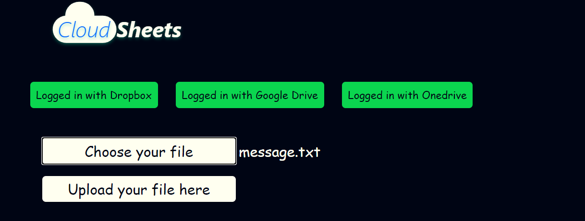
-
-Apasa upload pentru a incarca fisierul, si vezi fisierele-fragment in care a fost impartit:
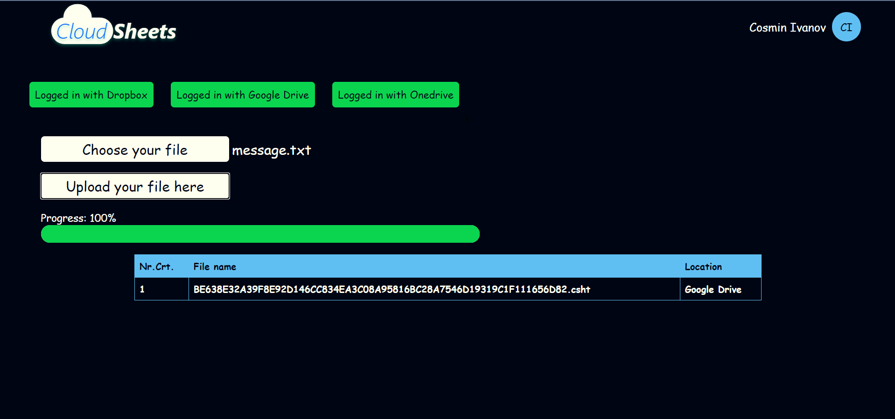
3.Your files
Pagina "your files" ofera urmatoarele functionalitati:
-
-Poti vedea si descarca (apasand pe download) fisierele deja uploadate de tine:
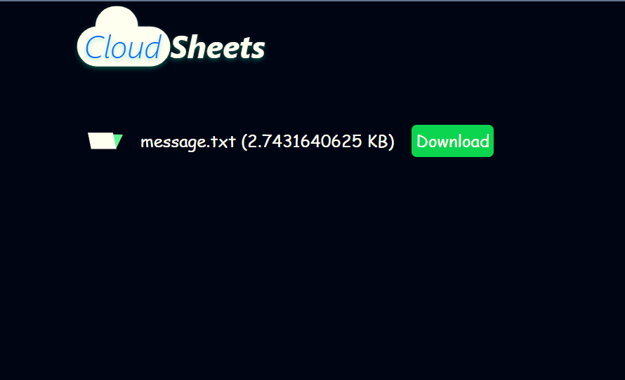
4.Settings
Pagina de setari ofera urmatoarele functionalitati:
-
-Poti sa iti schimbi numele, parola si poti selecta modul de upload al fisierelor,apasand pentru finalizare butonul Submit:
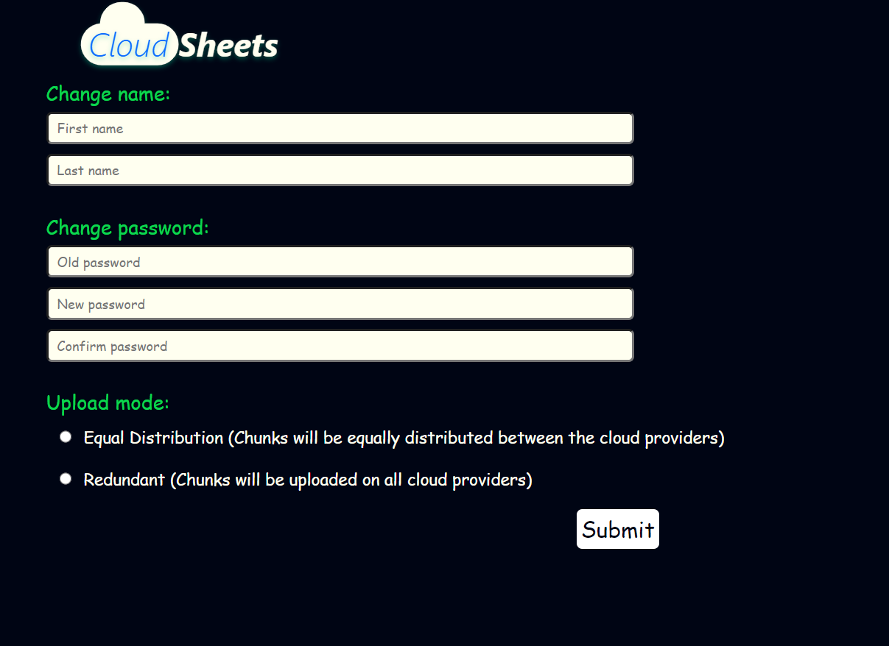
5.Administrator
Daca esti logat pe un cont de administrator:
-
-Poti sa vezi lista utilizatorilor existenti :
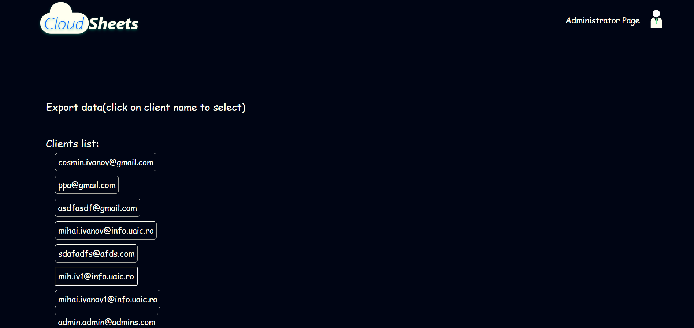
-
-Si poti descarca date in format csv despre userii selectati de tine(prin click pe adresele lor de email) :
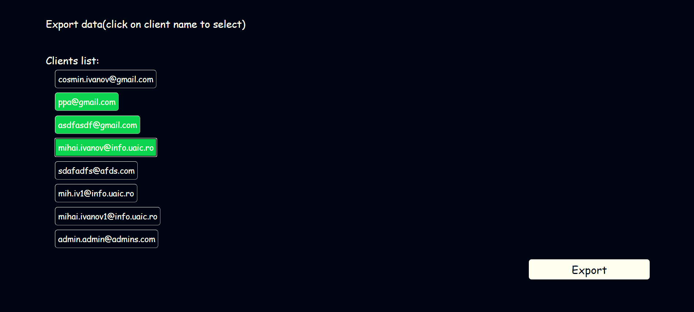
Intre aceste pagini, se poate naviga folosind meniul utilizatorului:
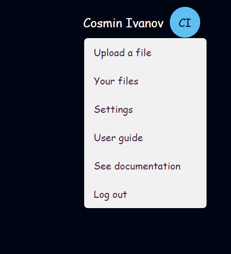